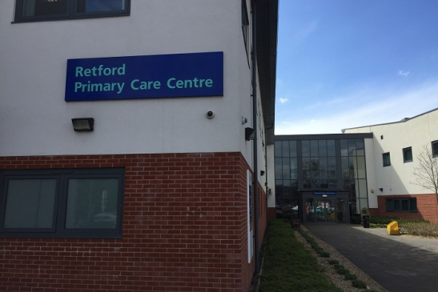

Retford GP Practices to Benefit from Major NHS Funding
Retford doctors are set to receive funding to help them cope with the increasing demand for appointments. This is great news for local people who have been struggling to get the help they need.
Read More